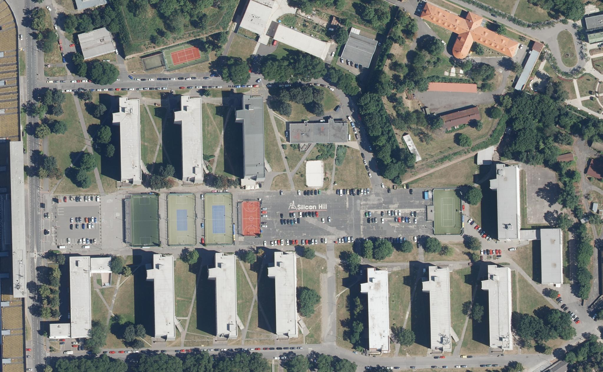

datový podklad © IPR Praha · CC BY 4.0 ·
Interpretované čáry a parkovací místa
Průzkumný 3D náhled: skutečný reliéf, mapované povrchy a hmoty budov.
Fasády a provoz vozidel ověřuje celá hra.
© ČÚZK, upraveno · CC BY 4.0; © OpenStreetMap contributors, ODbL. B6 má
výslovnou základovou adaptaci. Čáry a nápis jsou foto-interpretace.